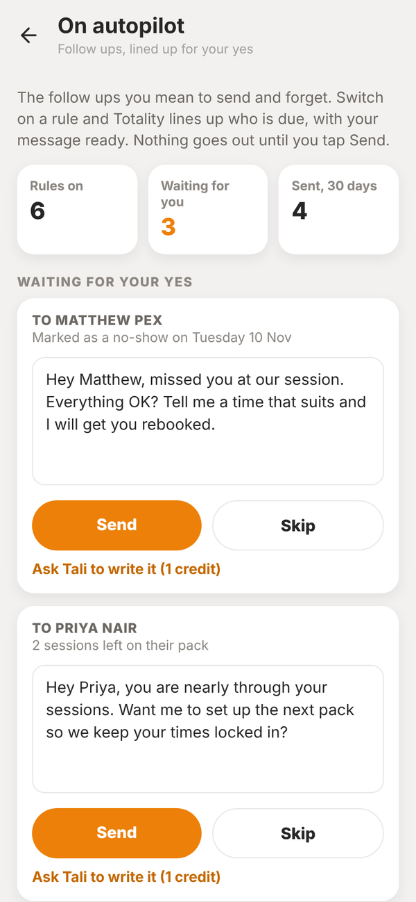
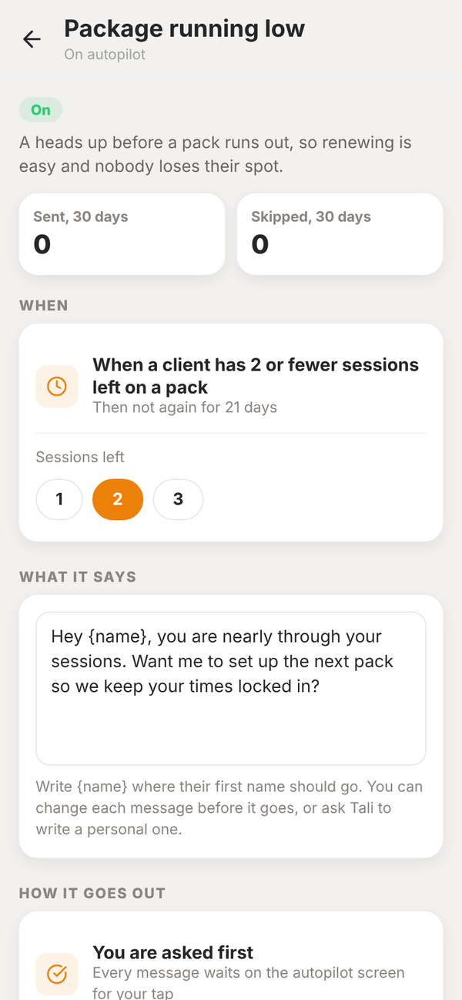

Totality for trainers
On autopilot
Rules that work out which client is due a follow up and line up the message for your yes. Welcome, gone quiet, check-in, missed session, package running low, review and birthday.
On autopilot is for the follow ups you mean to send and forget. Switch on a rule and Totality works out who is due, then shows you the message ready to go. Nothing goes out until you tap Send.
On Home, open On autopilot under My business.


The rules#
| Rule | When it lines up a message |
|---|---|
| Welcome someone new | A client joined in the last 7 days |
| Check in when they go quiet | No logged session for 14 days (you can pick 7, 14, 21 or 30) |
| Check-in reminder | A client who checks in has not sent one for 8 days (or 10 or 14) |
| Missed a session | A booked session is marked as a no-show |
| Package running low | A client has 2 or fewer sessions left on a pack (or 1 or 3) |
| Ask for a review | A client has been with you 21 days and is still training (or 42, 56 or 90) |
| Happy birthday | On their birthday, when a date of birth is saved |
Send, skip or rewrite#
Under Waiting for your yes you see three messages at a time, with Show all for the rest.
- Send sends it as a message in the app, with a notification on their phone.
- Skip leaves that client alone for this round.
- Ask Tali to write it has Tali write a personal version for 1 Tali credit. You can edit it before you send.
- On a phone, Text from my phone opens the message in your own Messages app when the client has a mobile number saved.
Change a rule#
Tap a rule to change its number, edit What it says (write {name} where their first name should go), see how many were sent and skipped in the last 30 days, or turn it off.
Nobody gets the same nudge twice in a row. Each rule waits before it asks about the same client again.
Does anything go out without me?
No. Every message waits on this screen for your tap.
I train at a gym. Do I have this?
On autopilot here is for independent trainers. At a gym, the owner runs the gym's rules.